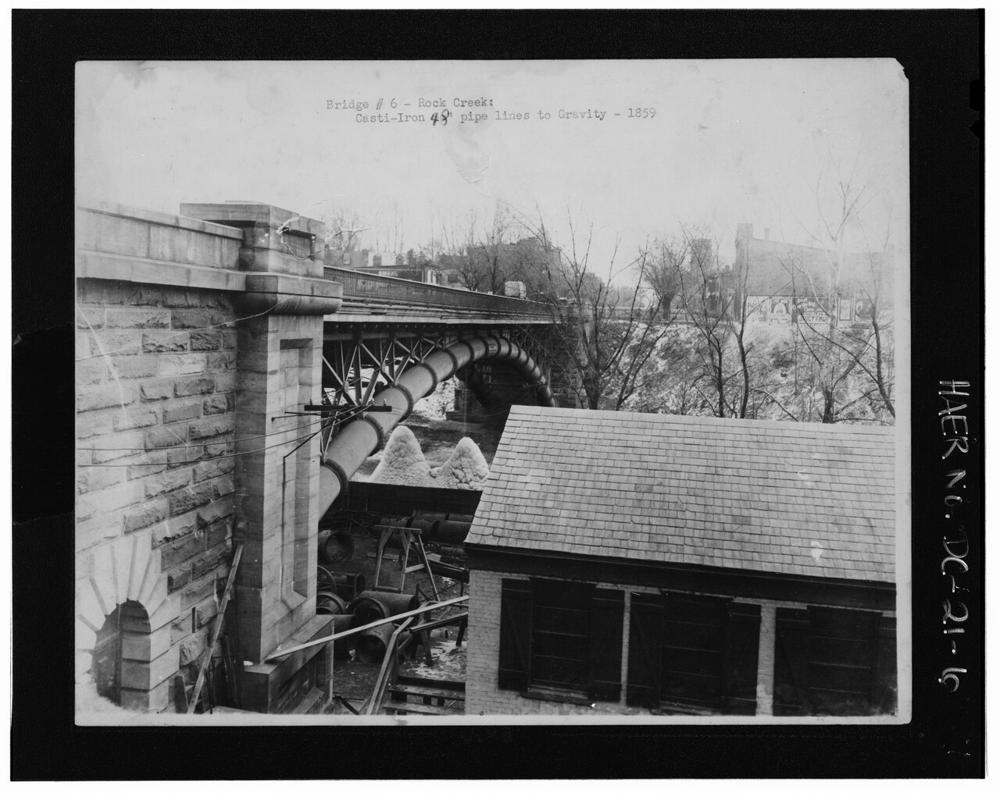

⚬
Наружные сети водоснабжения
Прокладка и врезка водопроводных сетей, водозаборные узлы (ВЗУ), опрессовка и дезинфекция.
Проектируем и строим наружные сети водоснабжения, теплоснабжения и канализации. Возводим КНС, ЛОС и ВЗУ. Работаем по договору строительного подряда с допуском СРО.
Полный цикл — от трассировки до пусконаладки. Работаем по договору строительного подряда с допуском СРО.
Прокладка и врезка водопроводных сетей, водозаборные узлы (ВЗУ), опрессовка и дезинфекция.
Наружные тепловые сети, узлы учёта, восстановление и обслуживание теплосетей и ГВС.
Хозяйственно-бытовая и ливневая канализация, колодцы, восстановление существующих сетей.
Канализационные насосные станции — проектирование, монтаж и пусконаладка под ключ.
Локальные очистные сооружения: подбор, монтаж и обоснование правомерности подключения.
Водозаборные узлы — строительство, обвязка насосного оборудования и ввод в эксплуатацию.
Построенные и реконструированные сети водоснабжения, теплоснабжения и канализации — жилые комплексы, производственные и складские здания, капитальный ремонт и новое строительство.
Наружные сети водоснабжения (К1), ливневой (К2) и бытовой канализации, теплоснабжения. Ногинский р-н, г/о Черноголовка.
Строительство водовода и сетей дождевой канализации, увязка с существующими коммуникациями. Пос. Ватутинки, Москва.
Перекладка и реконструкция магистрального водовода, гидравлический расчёт и врезки. Пос. Ватутинки.
Наружные сети хозяйственно-бытовой и ливневой канализации, теплоснабжения. Московская область.
Реконструкция наружных водопроводных сетей музея-усадьбы. г.о. Красногорск.
Восстановление колодцев, ремонт и обслуживание теплосети и ГВС. д. Черное.
Наружные сети водоснабжения и канализации (трубы КОРСИС, Ø500). Московская область.
Комплекс наружных сетей водоснабжения и канализации (протяжённость ~380 м, глубина до 5 м, Ø400 КОРСИС).
Возведение канализационных насосных станций (6 очередей), бурошнековая и открытая прокладка, колодцы. Москва, Куркино.
Капремонт коллекторов по ул. Кирова, Первомайской и прилегающим адресам. Диаметры D300–D500.
Наружные сети водоотведения, бестраншейная прокладка методом ГНБ.
Канализационная насосная станция и сети водоотведения пристроя поликлиники.
Наружные водопровод, дождевая канализация, теплосети и наружное освещение. Москва, Чертановская.
Строительство ЦТП МОЭК с увязкой наружных тепловых сетей.
Наружные сети и насосная станция водоснабжения завода. Московская область.
Договор техприсоединения к теплосети МОЭК, корректировка ТУ. Москва.
Наружные водопровод и канализация корпусов 1.1 и 1.2. Москва.
Проект и монтаж временного водопровода для нужд строительной площадки.
Проектирование и строительство сети канализации. Московская область.
Строительство сетей ливневой канализации и локальных очистных (ЛОС). Пос. Ватутинки.
Внутриплощадочные сети К2 (без ЛОС) и К1 с присоединением к городской системе.
Наружные тепловые сети по согласованному проекту.
Возведение канализационной насосной станции в составе общего объёма работ.
Согласование и сопровождение договора водоотведения, получение ТУ. Москва.
Строительство водозаборного узла и обвязка насосного оборудования.
* Список включает реализованные и текущие работы ООО «РСИ» по наружным инженерным сетям в Москве и Московской области.
Экспонаты из истории водоснабжения и канализации — документальные снимки и портреты. Нажмите на карточку, чтобы прочитать пояснение, как в музее у витрины.
 1804
1804Первый водопровод России, Мытищинский. 21 арка, длина 292,6 м. Воздвигнут по указу Екатерины II.
Открыт 28 октября 1804 года. В народе — «Миллионный мост» за цену. Чистая вода мытищинских ключей самотёком шла в Москву — первый шаг к санитарному городу. Это прообраз любой современной наружной водоводной сети.
 1858
1858Эра инженера Дельвига: чугунный водовод и паровые насосы дали Москве напор.
Барон Андрей Дельвиг в 1853–1858 гг. перестроил водопровод — забор воды вырос в 10 раз. Башня стала узлом распределения, как сегодняшние насосные станции (КНС).

1859Строительство акведука: укладка чугунных труб Ø48″. Та же технология, что легла в основу городских сетей.
Чугунные трубы диаметром 48 дюймов укладывали подземно ещё в XIX веке. Материал и принцип не изменились: герметичная магистраль под землёй, несущая воду под давлением.
 1900
1900Механическая подача воды на смену самотёку. Предок современных КНС и ВЗУ.
Насосные станции заменили гравитацию там, где рельеф не позволял. Сегодня ООО «РСИ» строит их же потомков — КНС, ЛОС и ВЗУ.
 инженер
инженерИнженер, перестроивший московский водопровод. Автор схемы «источник — насос — водовод — узел».
Именно Дельвиг задал конструкцию, которую мы повторяем в каждом проекте наружных сетей: источник → насос → напорный водовод → узел распределения.
 инженер
инженерСоздатель гидравлического расчёта водопроводов и гиперболоидных башен.
В 1887–1888 гг. Шухов рассчитал Новый Мытищинский водопровод на 1,12 млн вёдер в сутки. Его методы живы в любом гидравлическом расчёте наших сетей.
Изучаем проект и технические условия, готовим обоснования и схемы подключения.
Собственная прорабская и инженерная команда. Контроль качества на каждом этапе.
Опрессовка, промывка, дезинфекция, испытания. Сдача по актам и допускам.
Сопровождаем введённые сети, помогаем с эксплуатацией и документацией.
Компания является членом саморегулируемой организации, зарегистрированной в НОСТРОЙ, со свидетельством о допуске к видам работ, влияющим на безопасность объектов капитального строительства. Страхование ответственности — СПАО «Ингосстрах», полис № 433-549-185679/26 (действует с 26.08.2026 по 25.08.2027).
Пришлите техническое задание или позвоните — ответим по существу.
125130, г. Москва,
ул. Земляной вал, 48а, к. 68
ПАО Сбербанк
р/с 40702810538000004478
БИК 044525225